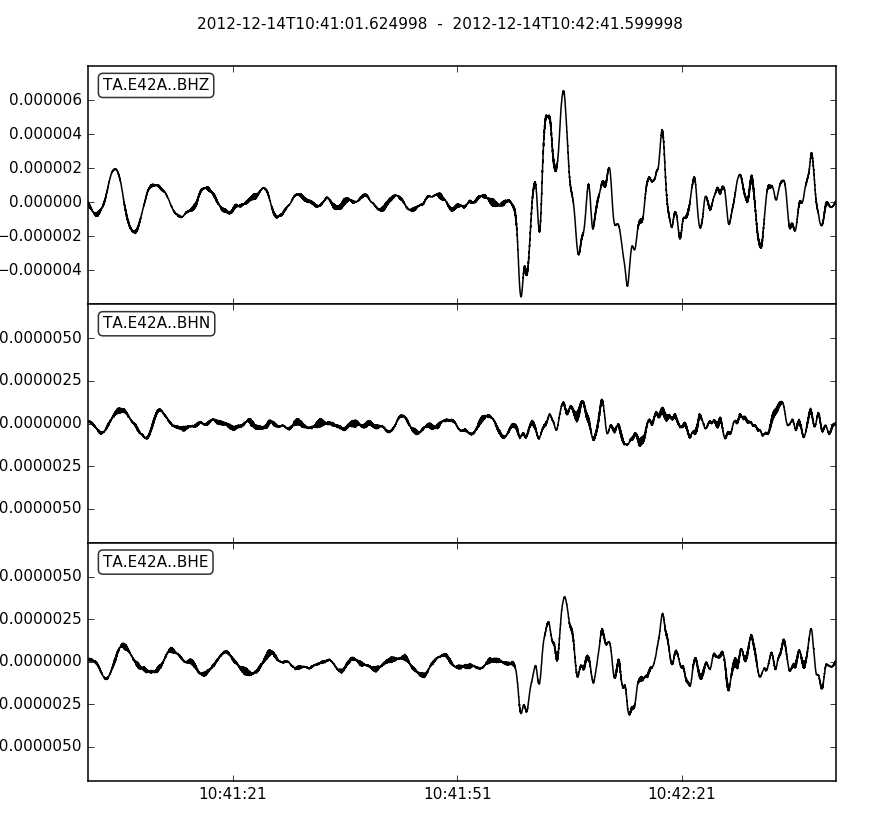

obspy.clients.fdsn.client.Client.get_waveforms¶
-
Client.get_waveforms(network, station, location, channel, starttime, endtime, quality=None, minimumlength=None, longestonly=None, filename=None, attach_response=False, **kwargs)[source]¶ Query the dataselect service of the client.
>>> client = Client("IRIS") >>> t1 = UTCDateTime("2010-02-27T06:30:00.000") >>> t2 = t1 + 5 >>> st = client.get_waveforms("IU", "ANMO", "00", "LHZ", t1, t2) >>> print(st) 1 Trace(s) in Stream: IU.ANMO.00.LHZ | 2010-02-27T06:30:00.069538Z - ... | 1.0 Hz, 5 samples
The services can deal with UNIX style wildcards.
>>> st = client.get_waveforms("IU", "A*", "1?", "LHZ", t1, t2) >>> print(st) 3 Trace(s) in Stream: IU.ADK.10.LHZ | 2010-02-27T06:30:00.069538Z - ... | 1.0 Hz, 5 samples IU.AFI.10.LHZ | 2010-02-27T06:30:00.069538Z - ... | 1.0 Hz, 5 samples IU.ANMO.10.LHZ | 2010-02-27T06:30:00.069538Z - ... | 1.0 Hz, 5 samples
Use
attach_response=Trueto automatically add response information to each trace. This can be used to remove response usingremove_response().>>> t = UTCDateTime("2012-12-14T10:36:01.6Z") >>> st = client.get_waveforms("TA", "E42A", "*", "BH?", t+300, t+400, ... attach_response=True) >>> st.remove_response(output="VEL") <obspy.core.stream.Stream object at ...> >>> st.plot()
(Source code, png, hires.png)
Parameters: - network (str) – Select one or more network codes. Can be SEED network
codes or data center defined codes. Multiple codes are
comma-separated (e.g.
"IU,TA"). Wildcards are allowed. - station (str) – Select one or more SEED station codes. Multiple codes
are comma-separated (e.g.
"ANMO,PFO"). Wildcards are allowed. - location (str) – Select one or more SEED location identifiers. Multiple
identifiers are comma-separated (e.g.
"00,01"). Wildcards are allowed. - channel (str) – Select one or more SEED channel codes. Multiple codes
are comma-separated (e.g.
"BHZ,HHZ"). - starttime (
UTCDateTime) – Limit results to time series samples on or after the specified start time - endtime (
UTCDateTime) – Limit results to time series samples on or before the specified end time - quality (str, optional) – Select a specific SEED quality indicator, handling is data center dependent.
- minimumlength (float, optional) – Limit results to continuous data segments of a minimum length specified in seconds.
- longestonly (bool, optional) – Limit results to the longest continuous segment per channel.
- filename (str or file) – If given, the downloaded data will be saved there instead of being parse to an ObsPy object. Thus it will contain the raw data from the webservices.
- attach_response (bool) – Specify whether the station web service should be used to automatically attach response information to each trace in the result set. A warning will be shown if a response can not be found for a channel. Does nothing if output to a file was specified.
Any additional keyword arguments will be passed to the webservice as additional arguments. If you pass one of the default parameters and the webservice does not support it, a warning will be issued. Passing any non-default parameters that the webservice does not support will raise an error.
- network (str) – Select one or more network codes. Can be SEED network
codes or data center defined codes. Multiple codes are
comma-separated (e.g.
{kind=link}
{kind=link}